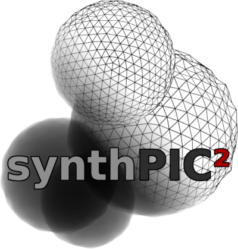
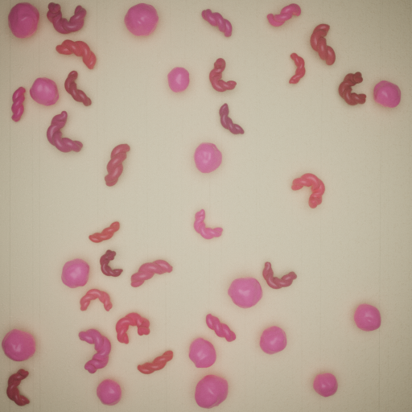
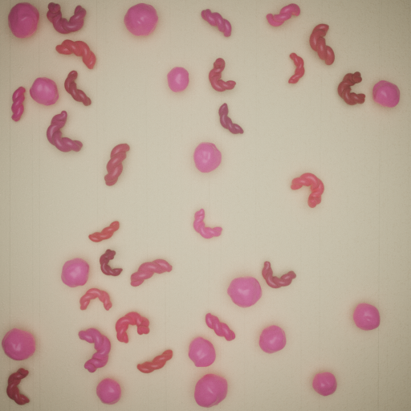
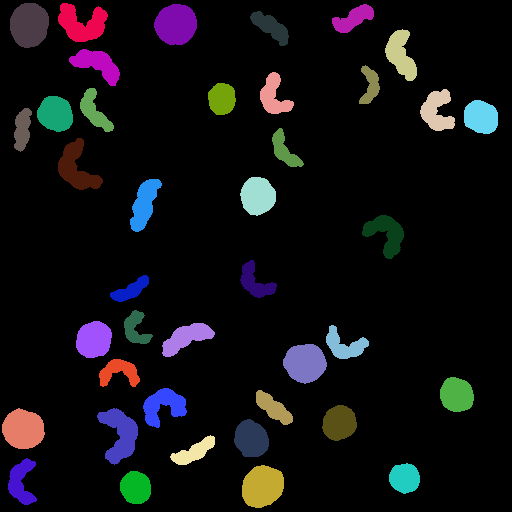
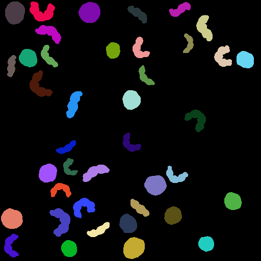

Getting Started¶
{kind=link}


 

 


Setup / Installation¶
Install Docker.
NOTE: On Windows, GPU support in Docker requires Windows 10 Version 21H2 or higher and WSL 2.
Download the latest release of synthPIC2 and extract it.
Copy .env.example, rename it to .env and adjust the required values.
Open a command line in the extracted folder.
Pull the docker image:
docker compose pull
NOTE: VS Code users need to have python>=3.5 installed on their systems, for VS Code to interact correctly with the development container.
First Steps¶
NOTE: On machines without a GPU, the docker-compose.yaml file needs to be modified by removing the section:
deploy:
resources:
reservations:
devices:
- capabilities: [ gpu ]
Start the docker container:
docker compose run app
Inside the container, execute the demo:
python run.py --config-dir=recipes --config-name=beads --multirun initial_runtime_state.seed="range(3)"
Wait for the renders to finish.
Inspect the rendered images in the output/beads folder.
Minimal Example¶
In this little example, we create our very first recipe file for image synthetization. Therefore, let’s create a new file and name it hello_world.yaml. We place this file inside the recipes subfolder under our root folder of synthPIC2 and add our first three lines in the file.
defaults:
- s_PrepareWorld
- _self_
In these three lines, we define two defaults, which will be merged into one single recipe in the given sequential order. The first prepares the scene for generating a synthesized image, which shows some text. The second default _self_ will merge the content of this file. So as a next step, let’s now add some content: We add 5 more lines to our hello_world.yaml file.
process_conditions:
feature_variabilities:
WriteText:
variability:
value: Hello World
In these lines, we just specified, that there is a feature, which is variable. This feature is called WriteText. As the variable part, we assign the string 'Hello World' to it. In order to execute this recipe, we need to call the function run.py with the parameter --config-name=hello_world. The latter specifies the name of the recipe file, while the file extension yaml is excluded.
python run.py --config-dir=recipes --config-name=hello_world
We synthesized our first image, which can be found in the file output/hello_world/<YYYY-MM-DD_hh-mm-ss>/run0/real/<hash>.png under our root directory of synthPIC2.
Tutorials¶
Documentation¶
Acknowledgement¶
This work was supported by the German Federal Ministry of Education and Research (BMBF) under the grant “iPMT—Data Synthesis for Applications in Intelligent Particle Measurement Technology (01IS21065A)”.